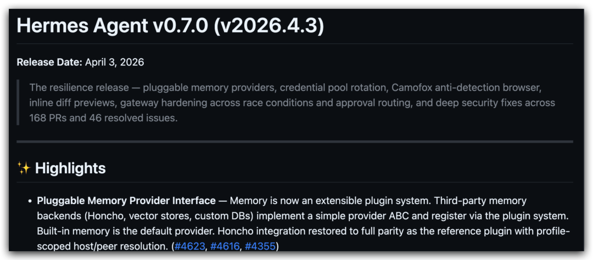
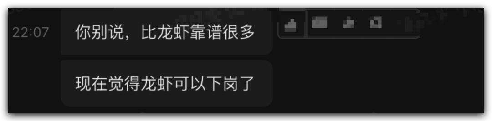
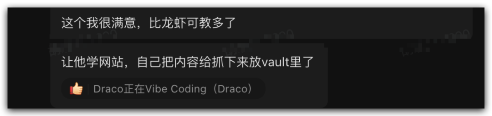
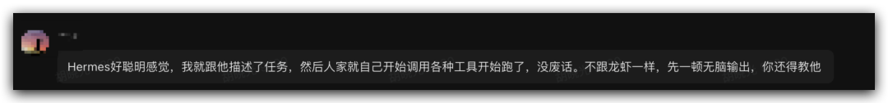
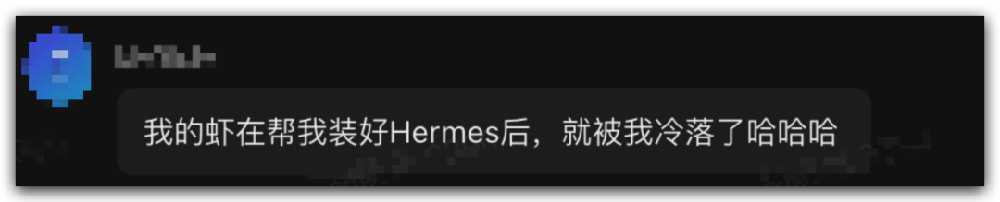
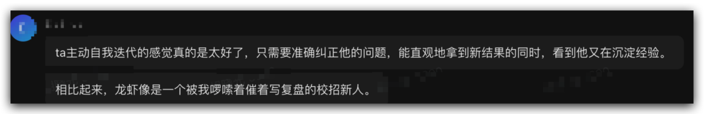
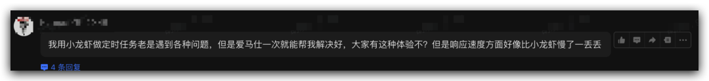

一、Hermes Agent版本更新
4月3日，Hermes Agent正式发布V0.7.0版本，以plugin方式同步上线了对市面上最受欢迎的7款Memory框架的扩展支持：Honcho、Holographic、ByteRover、OpenViking、Mem0、Hindsight、RetainDB。

在Hermes自有Memory系统之上，可在7款Memory框架任选其一用于增强其记忆系统。 以下是7套系统的快速对比，供大家参考（我选了Holographic）：
二、全面切换Hermes Agent
结合之前Hermes Agent已经极为强大的skill自进化能力，在深度测试Hermes Agent一周后，我决定从今天开始将之前养了两个月的龙虾团队全部迁移到Hermes Agent！仅保留一台2核4G入门云主机继续养“小龙虾”，但也仅作为继续追踪OpenClaw技术迭代的体验机使用。 这个决心其实并不好下，尤其是作为国内最早布道OpenClaw的自媒体作者之一；不过，Agent是OPC最重要的员工和资产，经济学上“沉没成本不是成本”，不应当计入理性思考中。 而Hermes也没有让人失望，一天时间已经完成了绝大多数工作流的迁移。
如果说：Skill就是工作流，是个人和组织knowhow的沉淀。
而Hermes Agent长于Skill的自我进化，那么从这个意义看，它就是“为了个人和组织knowhow和工作流沉淀和进化而生的Agent”。
三、Hermes Agent中文社区（飞书群）热烈讨论中
昨晚建了Hermes Agent中文社区的飞书群，没想到一小时就超了100人，由于之前是个人普通版无法提高上限，还不得不缴给飞书￥600元的商业版升级费用才突破了100人上限，目前已经有550位同学加入，或许这已经是国内最大的Hermes Agent社区了吧。
社群中讨论比较热烈，开始使用Hermes Agent的同学反馈也相对比较统一：






有希望参加体验和讨论的同学可以继续加入我们的飞书群：